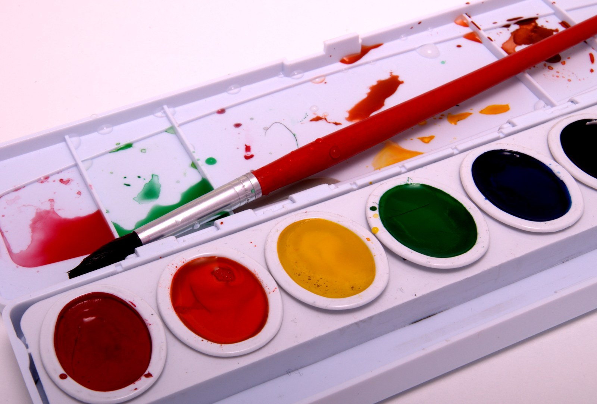
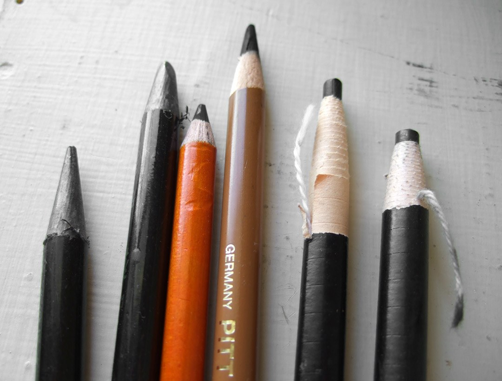

水彩材料入门
适合已经能完成基础线稿的成人。教室提供课堂练习用纸、画架和洗笔容器，画笔、颜料与调色盒自备，普通学生级材料即可。
杭州西湖区 · 成人业余绘画小班
以观察、构图和材料练习组织线下小班
零基础学员从素描观察开始，已有基础的学员对照自己的线稿和练习选择水彩或速写。每次课留出独立练习、教师交流和作品讨论的时间，阶段记录供学员本人回看。
课程仅限 18 岁及以上成人的业余练习，不颁发学历、考级或职业资格证书。
适合零基础或希望重练观察方法的成人；从轮廓、比例和明暗开始，逐步练习静物组合。
先观察单件静物的高宽关系，再比较明暗与投影，后半段把多个物体放进同一画面，课末回看每个人自己的观察记录。
教室提供课堂练习纸和铅笔，画架供课堂使用。下一期开课日期与固定时段待补充。


适合已经能完成基础线稿的成人。教室提供课堂练习用纸、画架和洗笔容器，画笔、颜料与调色盒自备，普通学生级材料即可。
适合已有素描基础、可以参加户外练习的成人。速写本和笔自备，课堂画架按室内练习安排使用；户外地点与集合方式每次课前确认。
水彩课材料说明更新，课堂用纸由教室提供，画笔、颜料和调色盒由学员准备。
素描基础整理了从单件到组合静物的练习记录，供学员课末回看自己的观察过程。
城市速写的课前说明增加集合安排核对项，地点仍在每次课前确认。
教室在杭州市西湖区，门牌地址待补充。
各班上课时段另随课程安排确认，下一期开课日期待补充。
邮箱：courses@shise-art.luckye.online
Speciality artists pencils 051907.jpg — Mrs Scarborough; https://commons.wikimedia.org/wiki/File:Speciality_artists_pencils_051907.jpg; Public Domain (https://commons.wikimedia.org/wiki/File:Speciality_artists_pencils_051907.jpg#Licensing); source file colour-adjusted by Hohum on 2025-07-08 (Commons file history); full-frame resized/JPEG re-encoded derivative.
Set of watercolor paints - Ariel Waldman.jpg — Ariel Waldman from Muncie; https://commons.wikimedia.org/wiki/File:Set_of_watercolor_paints_-_Ariel_Waldman.jpg; CC BY-SA 2.0 (https://creativecommons.org/licenses/by-sa/2.0); full-frame resized/JPEG re-encoded derivative. Same source license retained.